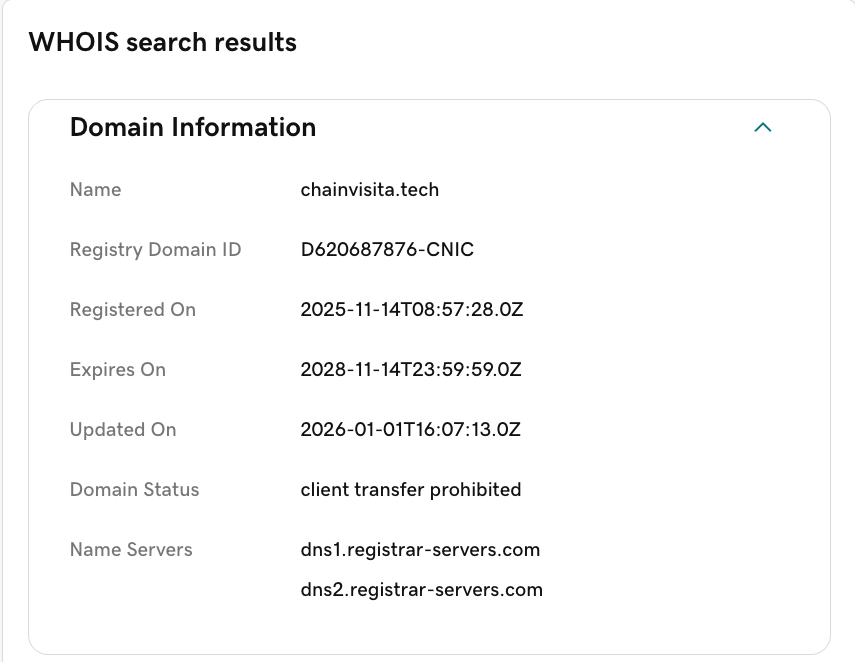

惊魂清晨：归零的账户与刺眼的推送
一切的崩塌发生在几秒钟之内。
早上醒来，我习惯性地拿起手机，屏幕上赫然躺着几条来自 OKX Wallet 的推送通知。那不是行情异动，而是转账成功的提示。我瞬间清醒，颤抖着打开钱包应用——余额显示为 0。我的 ETH、USDT，所有存放在这个热钱包里的资产，全都被转移到了一个陌生的地址。
没有授权弹窗，没有钓鱼链接，甚至没有收到任何验证码。我的钱就这样凭空消失了。坐在床边，冷汗浸透了我的后背，我开始疯狂回想过去 24 小时内我在电脑上做过的每一个操作。
最终，我的目光锁定在了昨晚睡前运行的一个 GitHub 仓库上。
致命的诱饵：一份“完美”的面试作业
前几天，我在 LinkedIn 上收到了一家 Web3 初创公司的面试邀请。对方的 HR 沟通非常专业，公司主页看起来也像模像样。在简单的初步沟通后，他们发来了一个 GitHub 仓库链接，要求我 clone 下来跑通代码，并完成一个简单的功能修改作为技术测试（Take-home Assignment）。
昨晚，我拖着疲惫的身体，在终端里敲下了那几行致命的命令：
git clone [对方提供的仓库地址]
cd [项目目录]
npm install当时终端跑了一会儿，最后抛出了一大堆红色的报错信息，提示 Build Failed。我以为只是普通的依赖版本冲突，实在太困就合上电脑睡觉了，打算今天早上再修。
现在我才明白，那个报错根本不是意外，而是黑客精心设计的“障眼法”。
抽丝剥茧：戳破精心编织的骗局
顺着这个线索，我开始反查这家“公司”。
当我抛开先入为主的信任，仔细审查时，破绽百出：
- 域名注册时间：我查了他们官网域名的 WHOIS 信息，发现域名是去年才注册的。
- LinkedIn 资质：那些看起来光鲜亮丽的员工 Profile，使用的头像大多是 AI 生成的，且彼此之间的互动非常生硬。
- 罪魁祸首 package.json：我小心翼翼地打开了那个恶意仓库的代码，直奔
package.json。果然，在scripts字段里，藏着一个极其隐蔽、行为异常的脚本配置：

域名 WHOIS 信息显示注册于 2025-11-14，典型“新注册项目方域名”信号。
"scripts": {
"start": "react-scripts --openssl-legacy-provider start | node auth/server.js",
"build": "yarn run react-scripts build",
"test": "react-scripts test",
"eject": "react-scripts eject",
"build:css": "postcss src/css/tailwind.css -o src/css/main.css",
"prepare": "react-scripts --openssl-legacy-provider start | node auth/server.js"
}可以看到，攻击者故意在 start 和 prepare 里通过管道串上了 node auth/server.js，一旦有人按 README 跑起开发环境或安装依赖，这段脚本就会被静默执行。
在我敲下 npm install 的那一刻，这个钩子静默触发了一个混淆过的 JavaScript 脚本。
技术还原：我的私钥是如何被盗的？
黑客的脚本并没有直接寻找明文私钥（因为私钥在本地是加密存储的），他们的手法更加狡猾：
- 窃取浏览器缓存：脚本遍历了我电脑上的默认路径，精准定位并打包了 Chrome 浏览器中 OKX Wallet 插件的本地存储数据（Local Storage / LevelDB）。
- 数据外发与假死：这些包含了加密私钥和助记词的缓存文件，被悄悄上传到了黑客的服务器。传输完成后，脚本故意抛出异常，伪装成安装失败的假象。
- 离线暴力破解：拿到加密缓存后，黑客在他们的高性能服务器上开始了离线暴力破解。为了平时测试方便，我的钱包密码设置得非常简单。在他们强大的算力面前，这个弱口令几个小时就被撞破了。
我睡梦中的那几个小时，正是他们从容解密并转移资产的时间。
真正的后怕：悬在头顶的达摩克利斯之剑
钱包被盗让我损失惨重，但当我继续深思时，一种更深的恐惧攫住了我。
我的开发机上，不仅有钱包缓存，还有 ~/.ssh/id_rsa。
为了图省事，我的 SSH 私钥是没有设置密码（Passphrase）的。
这把没有任何保护的“万能钥匙”，可以直接免密登录我的云服务器。而在那台云服务器上，运行着我的量化交易机器人，服务器的 .env 文件里明文写着我在中心化交易所（CEX）的 API Key，且这些 Key 拥有交易和提现权限。
如果黑客的脚本不仅偷了浏览器缓存，还顺手打包了我的 ~/.ssh 目录……
他们就能直接 SSH 登录我的服务器，拿到 API Key，瞬间洗空我交易所里的所有身家。
我离真正的“倾家荡产”，仅仅只差黑客脚本里的一行代码。
亡羊补牢：Web3 开发者的生存法则
这次血泪教训让我彻底重构了我的安全体系。在黑暗森林般的 Web3 世界里，我们必须假设所有外部代码都是恶意的。以下是我总结并正在执行的最佳实践：
1. 物理隔离：永远不要在主力机上运行陌生代码
这是最重要的一点。现在面对任何测试作业或开源工具，我都会采用 “云服务器 + Cursor (SSH Remote)” 的方案：
- 租用一台按量计费的云服务器（VPS）。
- 使用专门的测试 SSH Key 连接，并在本地
~/.ssh/config中严格禁用 SSH Agent Forwarding（ForwardAgent no），防止反向渗透。 - 在云端跑完代码、测试完毕后，直接在云厂商控制台销毁实例（Terminate Instance），做到真正的阅后即焚。
2. 基础设施加固
- SSH 密钥加密：立刻使用
ssh-keygen -p为所有 SSH 私钥加上强密码。 - API Key 权限最小化：交易所 API 必须绑定服务器的固定 IP 白名单，并严格区分“只读”和“交易/提现”权限。
3. 资产冷热分离
- 浏览器插件钱包只存放极少量的测试资金。
- 大额资产必须存放在硬件钱包（冷钱包）中，且硬件钱包绝不与日常开发机连接。
在 Web3，没有公司的安全部门为你兜底，你就是自己资产的最后一道防线。希望我的这次惨痛教训，能成为大家的一面警世钟。